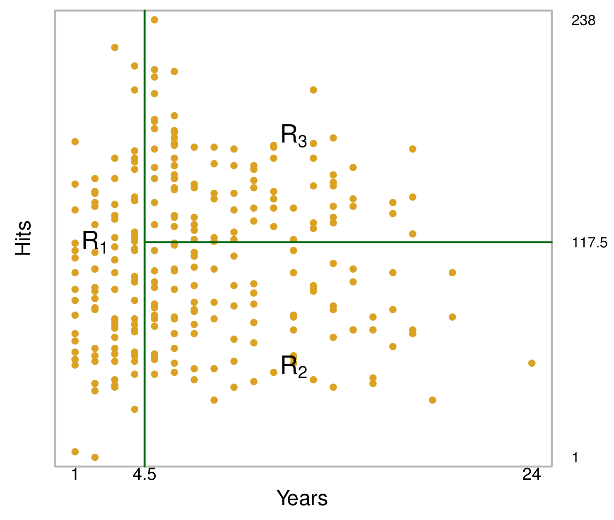
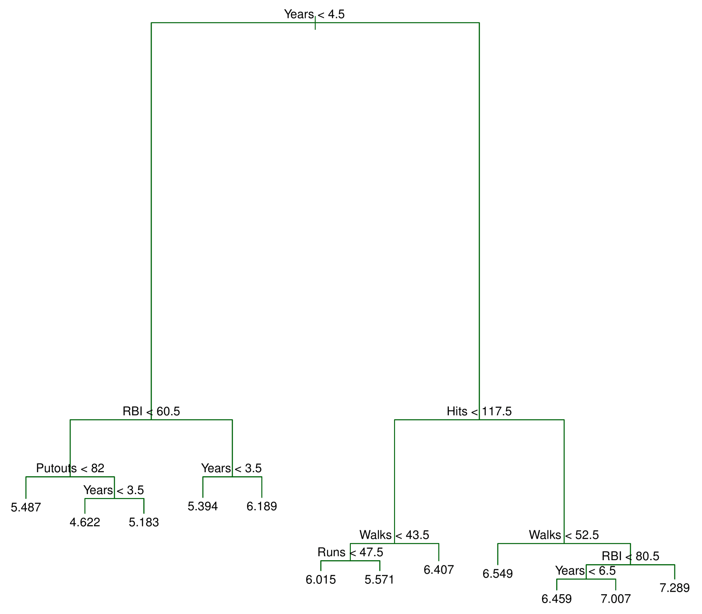
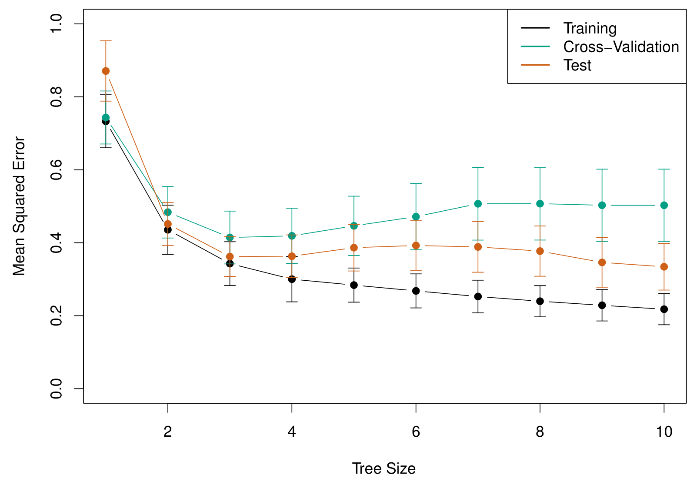
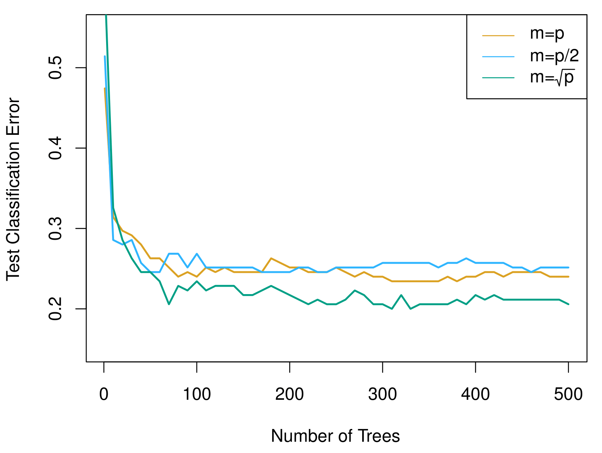
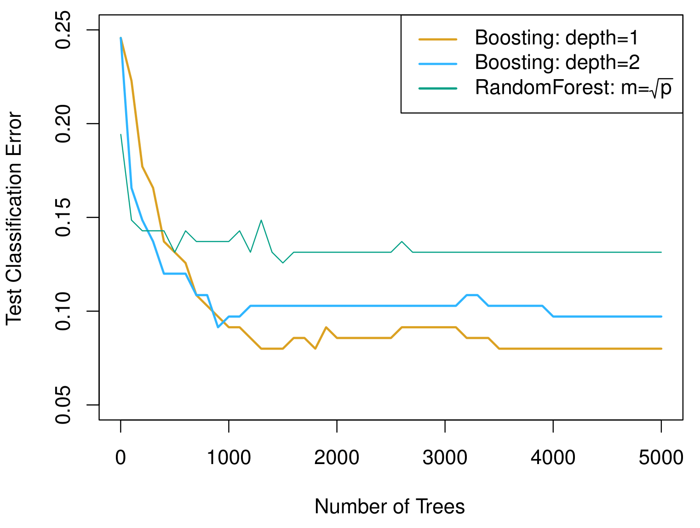

MGMT 47400: Predictive Analytics
Tree Based Methods
Overview
- Tree-based Methods
- The Basics of Decision Trees
- Details of the tree-building process
- Predictions
- Classification Trees
- Trees Versus Linear Models
- Bagging
- Random Forests
- Boosting
- Variable Importance Measure
- BART
This lecture content is inspired by and replicates the material from An Introduction to Statistical Learning.
Tree-based Methods
Tree-based Methods
We will discuss tree-based methods for regression and classification.
These involve stratifying or segmenting the predictor space into a number of simple regions.
Since the set of splitting rules used to segment the predictor space can be summarized in a tree, these types of approaches are known as decision-tree methods.
Pros and Cons
Tree-based methods are simple and useful for interpretation.
However, they typically are not competitive with the best supervised learning approaches in terms of prediction accuracy.
Hence we also discuss bagging, random forests, and boosting. These methods grow multiple trees which are then combined to yield a single consensus prediction.
Combining a large number of trees can often result in dramatic improvements in prediction accuracy, at the expense of some loss in interpretation.
The Basics of Decision Trees
The Basics of Decision Trees
Decision trees can be applied to both regression and classification problems.
We first consider regression problems, and then move on to classification.
Baseball salary (Hitters) data: how would you stratify it?
Before examining the structure of a decision tree, let us begin by considering how to stratify the data.
Here, the response variable is player salary, which is color-coded in the figure from lower salaries (blue and green) to higher salaries (yellow and red).
Our objective is to separate high-salary players from those with lower salaries.
By inspecting the plot, we observe that players earning higher salaries tend to cluster in the upper portion, whereas players with lower salaries appear in an “L-shaped” cluster below.
One straightforward approach is to establish a vertical threshold around five years of career experience, effectively isolating many of the higher-salary players.
To refine the partitioning further, we might introduce a horizontal threshold slightly above 100 hits, creating three distinct segments of the feature space.
This step-by-step segmentation process is precisely how decision trees operate. By recursively applying threshold-based rules, we isolate increasingly homogeneous subsets of players and, in turn, more accurately predict salary levels.
Decision tree for these data
The top node represents the full dataset.
The first split is based on years of experience:
- Players with less than 4.5 years → Left branch.
- Players with more than 4.5 years → Right branch.
This split closely aligns with our initial estimate of 5 years.
Among players with more than 4.5 years, the tree applies a second split:
- Fewer than 117.5 hits → Left branch.
- More than 117.5 hits → Right branch.
This recursive splitting refines the salary prediction.
What Do the Numbers Represent?
The values at the bottom nodes indicate the average log salary of players in that group.
Since a log transformation was applied, these values represent average log salaries rather than raw salaries.
Final Segmentation
The decision tree ultimately divides players into three distinct salary groups:
- Highest salary
- Medium salary
- Lowest salary
These categories closely match—though not exactly—the three regions we initially identified.
By systematically applying these splits, decision trees segment data into meaningful, homogeneous groups.
The final tree has two internal nodes and three terminal nodes (leaves). The number in each leaf is the mean of the response for the observations that fall there.
Results

The tree stratifies or segments the players into three regions of predictor space:
\[ R_1 = \{X \ | \ \text{Years} < 4.5\} \]
\[ R_2 = \{X \ | \ \text{Years} \geq 4.5, \text{Hits} < 117.5\} \]
\[ R_3 = \{X \ | \ \text{Years} \geq 4.5, \text{Hits} \geq 117.5\} \]
Terminology for Trees
In keeping with the tree analogy, the regions \(R_1\), \(R_2\), and \(R_3\) are known as terminal nodes.
Decision trees are typically drawn upside down, in the sense that the leaves are at the bottom of the tree.
The points along the tree where the predictor space is split are referred to as internal nodes.
In the Hitters tree, the two internal nodes are indicated by the text \(\text{Years} < 4.5\) and \(\text{Hits} < 117.5\).
Interpretation of Results
Years is the most important factor in determining Salary, and players with less experience earn lower salaries than more experienced players.
Given that a player is less experienced, the number of Hits that he made in the previous year seems to play little role in his Salary.
But among players who have been in the major leagues for five or more years, the number of Hits made in the previous year does affect Salary, and players who made more Hits last year tend to have higher salaries.
Surely an over-simplification, but compared to a regression model, it is easy to display, interpret and explain.
Details of the tree-building process
Details of the tree-building process
We divide the predictor space — that is, the set of possible values for \(X_1, X_2, \dots, X_p\) — into \(J\) distinct and non-overlapping regions, \(R_1, R_2, \dots, R_J\).
For every observation that falls into the region \(R_j\), we make the same prediction, which is simply the mean of the response values for the training observations in \(R_j\).
More details of the tree-building process
In theory, the regions could have any shape. However, we choose to divide the predictor space into high-dimensional rectangles, or boxes, for simplicity and for ease of interpretation of the resulting predictive model.
The goal is to find boxes \(R_1, \dots, R_J\) that minimize the RSS, given by
\[ \sum_{j=1}^{J} \sum_{i \in R_j} \left( y_i - \hat{y}_{R_j} \right)^2, \]
where \(\hat{y}_{R_j}\) is the mean response for the training observations within the \(j\)-th box.
More details of the tree-building process
Unfortunately, it is computationally infeasible to consider every possible partition of the feature space into \(J\) boxes.
For this reason, we take a top-down, greedy approach that is known as recursive binary splitting.
The approach is top-down because it begins at the top of the tree and then successively splits the predictor space; each split is indicated via two new branches further down on the tree.
It is greedy because at each step of the tree-building process, the best split is made at that particular step, rather than looking ahead and picking a split that will lead to a better tree in some future step.
Details— Continued
We first select the predictor \(X_j\) and the cutpoint \(s\) such that splitting the predictor space into the regions \(\{X | X_j < s\}\) and \(\{X | X_j \geq s\}\) leads to the greatest possible reduction in RSS.
Next, we repeat the process, looking for the best predictor and best cutpoint in order to split the data further so as to minimize the RSS within each of the resulting regions.
However, this time, instead of splitting the entire predictor space, we split one of the two previously identified regions. We now have three regions.
Again, we look to split one of these three regions further, so as to minimize the RSS. The process continues until a stopping criterion is reached; for instance, we may continue until no region contains more than five observations.
Predictions
Predictions
We predict the response for a given test observation using the mean of the training observations in the region to which that test observation belongs.
Predictions: Example
A five-region example
Top Left: A partition of two-dimensional feature space that could not result from recursive binary splitting.
Top Right: The output of recursive binary splitting on a two-dimensional example.
Bottom Left: A tree corresponding to the partition in the top right panel.
Bottom Right: A perspective plot of the prediction surface corresponding to that tree.
Predictions: Example Details
Top right & Bottom left: Regions that can be achieved by a decision tree.
Step-by-step breakdown:
The first split occurs at t1, making a vertical partition at \(x_1\).
The left region is further divided at t2 (a split on \(x_2\)), creating Region 1 and Region 2.
The right-hand partition is further split at t3, making another vertical split, forming Region 3.
Finally, a horizontal split at t4 on \(x_2\) divides it into two new regions.
- At the end of this process, the space is divided into five distinct regions.
Making Predictions with the Decision Tree
Each terminal node approximates the regression function by computing the mean of training observations in that region.
To predict a test observation:
Start at the top and check its \(x_1\) value.
Move left if \(x_1 < t1\), otherwise move right.
Follow subsequent splits at each internal node until reaching a terminal region.
The final prediction is the mean response value in that region.
- This results in a piecewise constant function, which is visualized in the plot on the bottom right.
Pruning a tree
- The process described above may produce good predictions on the training set, but is likely to overfit the data, leading to poor test set performance.
A better strategy is to grow a very large tree \(T_0\), and then prune it back in order to obtain a subtree.
Cost complexity pruning — also known as weakest link pruning — is used to do this.
We consider a sequence of trees indexed by a nonnegative tuning parameter \(\alpha\). For each value of \(\alpha\), there corresponds a subtree \(T \subset T_0\) such that
\[ \sum_{m=1}^{|T|} \sum_{i : x_i \in R_m} \left( y_i - \hat{y}_{R_m} \right)^2 + \alpha |T| \]
is as small as possible.
Here \(|T|\) indicates the number of terminal nodes of the tree \(T\), \(R_m\) is the rectangle (i.e., the subset of predictor space) corresponding to the \(m\)-th terminal node, and \(\hat{y}_{R_m}\) is the mean of the training observations in \(R_m\).
Choosing the best subtree
The tuning parameter \(\alpha\) controls a trade-off between the subtree’s complexity and its fit to the training data.
We select an optimal value \(\hat{\alpha}\) using cross-validation.
We then return to the full data set and obtain the subtree corresponding to \(\hat{\alpha}\).
Tree algorithm
Use recursive binary splitting to grow a large tree on the training data, stopping only when each terminal node has fewer than some minimum number of observations.
Apply cost complexity pruning to the large tree in order to obtain a sequence of best subtrees, as a function of \(\alpha\).
Use K-fold cross-validation to choose \(\alpha\). For each \(k = 1, \dots, K\):
3.1 Repeat Steps 1 and 2 on the \(\frac{K-1}{K}\)-th fraction of the training data, excluding the \(k\)-th fold. 3.2 Evaluate the mean squared prediction error on the data in the left-out \(k\)-th fold, as a function of \(\alpha\).
Average the results, and pick \(\alpha\) to minimize the average error.
Return the subtree from Step 2 that corresponds to the chosen value of \(\alpha\).
Baseball example continued
First, we randomly divided the data set in half, yielding 132 observations in the training set and 131 observations in the test set.
We then built a large regression tree on the training data and varied \(\alpha\) in order to create subtrees with different numbers of terminal nodes.
Finally, we performed six-fold cross-validation in order to estimate the cross-validated MSE of the trees as a function of \(\alpha\).
Baseball example: The Full Tree Before Pruning

Baseball example: Cross Validation for the Prune Tree

Along the horizontal axis, we have tree size, which is controlled by the alpha parameter (\(\alpha\)). This parameter directly influences the complexity of the decision tree.
When \(\alpha = 0\), there is no penalty on tree size, meaning the model grows to its largest possible tree, which in this case contains 12 terminal nodes.
As \(\alpha\) increases, a stronger penalty is applied to larger trees, gradually reducing the number of terminal nodes.
As \(\alpha\) continues to increase, the model prunes away more splits, simplifying the tree structure.
At the extreme, when \(\alpha\) is large enough, the tree is reduced to a single node, meaning no splits occur, and the model collapses into a single global mean prediction.
The green curve is what we get from cross validation and it’s minimized at around three terminal nodes!
Classification Trees
Classification Trees
Very similar to a regression tree, except that it is used to predict a qualitative response rather than a quantitative one.
For a classification tree, we predict that each observation belongs to the most commonly occurring class of training observations in the region to which it belongs.
Classification Trees
Just as in the regression setting, we use recursive binary splitting to grow a classification tree.
In the classification setting, RSS cannot be used as a criterion for making the binary splits.
A natural alternative to RSS is the classification error rate. This is simply the fraction of the training observations in that region that do not belong to the most common class:
\[ E = 1 - \max_k(\hat{p}_{mk}). \]
Here \(\hat{p}_{mk}\) represents the proportion of training observations in the \(m\)-th region that are from the \(k\)-th class.
- However, classification error is not sufficiently sensitive for tree-growing, and in practice, two other measures are preferable.
Gini index and Deviance
The Gini index is defined by
\[ G = \sum_{k=1}^K \hat{p}_{mk}(1 - \hat{p}_{mk}), \]
a measure of total variance across the \(K\) classes. The Gini index takes on a small value if all of the \(\hat{p}_{mk}\)’s are close to zero or one.
- For this reason, the Gini index is referred to as a measure of node purity — a small value indicates that a node contains predominantly observations from a single class.
Deviance or cross-entropy, given by
\[ D = - \sum_{k=1}^K \hat{p}_{mk} \log \hat{p}_{mk}. \]
- It turns out that the Gini index and the cross-entropy are very similar numerically.
Example: Heart data
These data contain a binary outcome HD for 303 patients who presented with chest pain.
An outcome value of Yes indicates the presence of heart disease based on an angiographic test, while No means no heart disease.
There are 13 predictors including Age, Sex, Chol (a cholesterol measurement), and other heart and lung function measurements.
Cross-validation yields a tree with six terminal nodes. See next figure.
Example: Heart data
At the top, we see the fully grown tree.
- The first split occurs on FEL (a thallium stress test), followed by splits on CA (calcium). The terminal nodes classify observations as “No” (no heart disease) or “Yes” (heart disease) based on majority class.
- Some terminal nodes with the same classification still have splits. This suggests that while both nodes predict “No,” one is purer than the other, as identified by the Gini index.
Since this tree is likely too complex, cross-validation was used to find an optimal size.
- The right panel shows training, validation, and test errors, with the cross-validation error curve guiding the selection of a tree size. A tree with six terminal nodes performed best, balancing complexity and accuracy.
The pruned tree (size six) is shown on the right, derived using the cost-complexity parameter (\(\alpha\)). This subtree of the original tree achieved an estimated 25% classification error—a significant improvement in generalization.
Trees Versus Linear Models
Trees Versus Linear Models

- Top Row: True linear boundary;
- Bottom row: true non-linear boundary.
- Left column: Linear model;
- Right column: Tree-based model.
Advantages and Disadvantages of Trees
Advantage: Trees are very easy to explain to people. In fact, they are even easier to explain than linear regression!
Advantage: Some people believe that decision trees more closely mirror human decision-making than do the regression and classification approaches.
Advantage: Trees can be displayed graphically, and are easily interpreted even by a non-expert (especially if they are small).
Advantage: Trees can easily handle qualitative predictors without the need to create dummy variables.
Disadvantage: Unfortunately, trees generally do not have the same level of predictive accuracy as some of the other regression and classification approaches seen in this book.
However, by aggregating many decision trees, the predictive performance of trees can be substantially improved. We introduce these concepts next.
Bagging
Bagging
Bootstrap aggregation, or bagging, is a general-purpose procedure for reducing the variance of a statistical learning method. It is particularly useful and frequently used in the context of decision trees.
Recall that given a set of \(n\) independent observations \(Z_1, \dots, Z_n\), each with variance \(\sigma^2\), the variance of the mean \(\bar{Z}\) of the observations is given by \(\sigma^2 / n\).
- This means that as \(n\) increases (i.e., we take more independent observations and average them), the variance of the mean decreases. The more independent samples we have, the more stable our estimate becomes.
In other words, averaging a set of observations reduces variance. In practice, we do not have access to multiple independent training sets, which would allow us to directly apply the above variance reduction principle.
- However, bagging overcomes this limitation by using bootstrapping—randomly sampling (with replacement) from a single training set to create multiple datasets. These datasets are used to train multiple models, whose predictions are then averaged, effectively reducing variance in the same way that averaging multiple independent observations does.
- Thus, bagging approximates the variance-reducing effect of having multiple training sets by repeatedly resampling from the same dataset.
Bagging
With bootstrap, by taking repeated samples from the (single) training data set, we generate \(B\) different bootstrapped training data sets.
We then train our method on the \(b\)-th bootstrapped training set in order to get \(\hat{f}^*_b(x)\), the prediction at a point \(x\). We then average all the predictions to obtain
\[ \hat{f}_{\text{bag}}(x) = \frac{1}{B} \sum_{b=1}^B \hat{f}^*_b(x). \]
This is called bagging.
The above prescription applied to regression trees.
For classification trees: for each test observation, we record the class predicted by each of the \(B\) trees, and take a majority vote: the overall prediction is the most commonly occurring class among the \(B\) predictions.
Bagging the Heart data
Bagging and Random Forest results.
The dashed line indicates the test error resulting from a single classification tree.
The test error (black and orange) is shown as a function of \(B\), the number of bootstrapped training sets used.
Random forests were applied with \(m = \sqrt{p}\).
The green and blue traces show the Out-of-Bag (OOB) error, which in this case is considerably lower.
Out-of-Bag Error Estimation
It turns out that there is a very straightforward way to estimate the test error of a bagged model.
Recall that the key to bagging is that trees are repeatedly fit to bootstrapped subsets of the observations. One can show that on average, each bagged tree makes use of around two-thirds of the observations.
The remaining one-third of the observations not used to fit a given bagged tree are referred to as the out-of-bag (OOB) observations.
We can predict the response for the \(i\)th observation using each of the trees in which that observation was OOB. This will yield around \(B/3\) predictions for the \(i\)th observation, which we average.
This estimate is essentially the LOO cross-validation error for bagging, if \(B\) is large.
Test Error vs. OOB Error in Bagging
- Data Overlap & Model Correlation
- Each model is trained on a bootstrap sample, leaving out some observations for OOB evaluation.
- Overlap among bootstrap samples introduces correlation among models, causing OOB error to differ from an independent test error.
- Each model is trained on a bootstrap sample, leaving out some observations for OOB evaluation.
- Sample Size & Representativeness
- OOB estimates use only the leftover observations from each bootstrap draw, often fewer and less representative than a true external test set.
- A well-chosen test set is typically larger and fully independent, providing a more stable performance estimate.
- OOB estimates use only the leftover observations from each bootstrap draw, often fewer and less representative than a true external test set.
- Random Fluctuations & Variance
- OOB error depends on random sampling; it can have higher variance than test error.
- An external test set, assuming it is independent, generally offers a less biased measure of generalization error.
- OOB error depends on random sampling; it can have higher variance than test error.
- Possible Bias in OOB Error
- While OOB error acts like an “internal cross-validation,” it may exhibit slight bias—optimistic or pessimistic—depending on the dataset and model specifics.
- Certain data characteristics or model sensitivities can amplify discrepancies between OOB and true test performance.
- While OOB error acts like an “internal cross-validation,” it may exhibit slight bias—optimistic or pessimistic—depending on the dataset and model specifics.
Random Forests
Random Forests
Key Idea
Random forests enhance bagged trees by introducing a small modification that decorrelates the individual trees, thus reducing variance when their predictions are averaged.Construction
- Bootstrapped Samples: As in bagging, multiple decision trees are trained on bootstrapped subsets of the original dataset.
- Random Predictor Selection: At each split in a tree, only a random subset of \(m\) predictors (out of \(p\) total) is considered. The best split is chosen exclusively from these \(m\) predictors.
- Bootstrapped Samples: As in bagging, multiple decision trees are trained on bootstrapped subsets of the original dataset.
Typical Parameter Choice
A new subset of \(m\) predictors is drawn at every split. Common practice sets \(m \approx \sqrt{p}\). For example, with \(p = 13\) predictors, 4 might be considered at each split.This random predictor selection helps ensure the trees are less correlated, thereby improving the variance reduction achieved by averaging.
Example: Gene Expression Data
We applied random forests to a high-dimensional biological data set consisting of expression measurements of 4,718 genes measured on tissue samples from 349 patients.
There are around 20,000 genes in humans, and individual genes have different levels of activity, or expression, in particular cells, tissues, and biological conditions.
Each of the patient samples has a qualitative label with 15 different levels: either normal or one of 14 different types of cancer.
We use random forests to predict cancer type based on the 500 genes that have the largest variance in the training set.
We randomly divided the observations into a training and a test set, and applied random forests to the training set for three different values of the number of splitting variables \(m\).
Results: Gene Expression Data
Results from random forests for the fifteen-class gene expression data set with \(p = 500\) predictors.

The test error is displayed as a function of the number of trees. Each colored line corresponds to a different value of \(m\), the number of predictors available for splitting at each interior tree node.
Random forests (\(m < p\)) lead to a slight improvement over bagging (\(m = p\)). A single classification tree has an error rate of 45.7%.
Boosting
Boosting
Like bagging, boosting is a general approach that can be applied to many statistical learning methods for regression or classification.
Recall that bagging involves creating multiple copies of the original training data set using the bootstrap, fitting a separate decision tree to each copy, and then combining all of the trees in order to create a single predictive model.
Notably, each tree is built on a bootstrap data set, independent of the other trees.
Boosting works in a similar way, except that the trees are grown sequentially: each tree is grown using information from previously grown trees and it is added to the collection of trees if it contributes to the performance improvement.
Boosting Algorithm for Regression Trees
Set \(\hat{f}(x) = 0\) and \(r_i = y_i\) for all \(i\) in the training set.
For \(b = 1, 2, \dots, B\), repeat:
2.1 Fit a tree \(\hat{f}^b\) with \(d\) splits (\(d + 1\) terminal nodes) to the training data \((X, r)\).
2.2 Update \(\hat{f}\) by adding in a shrunken version of the new tree:
\[ \hat{f}(x) \leftarrow \hat{f}(x) + \lambda \hat{f}^b(x). \]
2.3 Update the residuals,
\[ r_i \leftarrow r_i - \lambda \hat{f}^b(x_i). \]
- Output the boosted model,
\[ \hat{f}(x) = \sum_{b=1}^B \lambda \hat{f}^b(x). \]
What is the idea behind this procedure?
Unlike fitting a single large decision tree to the data, which amounts to fitting the data hard and potentially overfitting, the boosting approach instead learns slowly.
Given the current model, we fit a decision tree to the residuals from the model. We then add this new decision tree into the fitted function in order to update the residuals.
Each of these trees can be rather small, with just a few terminal nodes, determined by the parameter \(d\) in the algorithm.
By fitting small trees to the residuals, we slowly improve \(\hat{f}\) in areas where it does not perform well. The shrinkage parameter \(\lambda\) slows the process down even further, allowing more and different shaped trees to attack the residuals.
Boosting for classification is similar in spirit to boosting for regression, but is a bit more complex. To learn the deatails, check the Elements of Statistical Learning book, chapter 10.
Example: Gene expression data continued
Results from performing boosting and random forests on the fifteen-class gene expression data set in order to predict cancer versus normal.

The test error is displayed as a function of the number of trees.
For the two boosted models, \(\lambda = 0.01\). Depth-1 trees, when a single split where applied, slightly outperform depth-2 trees, and both outperform the random forest, although the standard errors are around 0.02, making none of these differences significant.
The test error rate for a single tree is 24%.
Tuning Parameters for Boosting
The number of trees \(B\). Unlike bagging and random forests, boosting can overfit if \(B\) is too large, although this overfitting tends to occur slowly if at all. We use cross-validation to select \(B\).
The shrinkage parameter \(\lambda\). A small positive number. This controls the rate at which boosting learns. Typical values are 0.01 or 0.001, and the right choice can depend on the problem. Very small \(\lambda\) can require using a very large value of \(B\) in order to achieve good performance.
The number of splits \(d\) in each tree, which controls the complexity of the boosted ensemble. Often \(d = 1\) works well, in which case each tree is a stump, consisting of a single split and resulting in an additive model. More generally \(d\) is the interaction depth, and controls the interaction order of the boosted model, since \(d\) splits can involve at most \(d\) variables.
Variable Importance Measure
Variable Importance Measure
For bagged/RF regression trees:
Record the total amount that the RSS is decreased due to splits over a given predictor, averaged over all \(B\) trees.
A large value indicates an important predictor.
For bagged/RF classification trees:
- Add up the total amount that the Gini index is decreased by splits over a given predictor, averaged over all \(B\) trees.
Summary
Decision trees are simple and interpretable models for regression and classification.
However, they are often not competitive with other methods in terms of prediction accuracy.
Bagging, random forests, and boosting are effective methods for improving the prediction accuracy of trees:
- They work by growing many trees on the training data and then combining the predictions of the resulting ensemble of trees.
Random forests and boosting are among the state-of-the-art methods for supervised learning, though their results can be difficult to interpret.
BART
Bayesian Additive Regression Trees
BART: Bayesian Additive Regression Trees
Recall that bagging and random forests make predictions from an average of regression trees, each of which is built using a random sample of data and/or predictors. Each tree is built separately from the others.
By contrast, boosting uses a weighted sum of trees, each of which is constructed by fitting a tree to the residual of the current fit. Thus, each new tree attempts to capture signal that is not yet accounted for by the current set of trees.
Bayesian additive regression trees (BART), an ensemble method that uses decision trees as its building blocks, is related to both random forests and boosting:
- Each tree is constructed in a random manner as in bagging and random forests, and each tree tries to capture signal not yet accounted for by the current model, as in boosting.
The main novelty in BART is the way in which new trees are generated.
BART can be applied to regression, classification, and other problems; we will focus here just on regression.
BART Algorithm Intuition
BART Algorithm Intuition
- Multiple Trees in Parallel
- Choose a number of trees, \(K\) (often in the hundreds), and a total of \(B\) iterations.
- All \(K\) trees start as a single root node and are updated in parallel through successive iterations.
- Choose a number of trees, \(K\) (often in the hundreds), and a total of \(B\) iterations.
- Random Perturbations
- At each iteration, each tree is modified via a “perturbation,” which can involve:
- Adding or removing a split.
- Adjusting the predicted values in terminal nodes.
- Adding or removing a split.
- Each tree is updated based on partial residuals, improving how the ensemble fits the data.
- At each iteration, each tree is modified via a “perturbation,” which can involve:
- Iterative Evolution
- Over \(B\) iterations, trees evolve—some gain new splits, others lose them, and node predictions adjust.
- This process is akin to a Markov chain over tree configurations, guided by how well each tree explains current residuals.
- Over \(B\) iterations, trees evolve—some gain new splits, others lose them, and node predictions adjust.
- Final Prediction by Averaging
- After \(B\) iterations, you have an ensemble of \(K\) trees that collectively capture the posterior distribution.
- The final prediction at a point \(x\) is typically the average of predictions from all \(K\) trees at the final iteration (or across multiple post–burn-in iterations).
- After \(B\) iterations, you have an ensemble of \(K\) trees that collectively capture the posterior distribution.
Bayesian Additive Regression Trees — Some Notation
We let \(K\) denote the number of regression trees, and \(B\) the number of iterations for which the BART algorithm will be run.
The notation \(\hat{f}^{b}_{k}(x)\) represents the prediction at \(x\) for the \(k\)th regression tree used in the \(b\)th iteration.
At the end of each iteration, the \(K\) trees from that iteration will be summed, i.e.,
\[ \hat{f}^{b}(x) = \sum_{k=1}^{K} \hat{f}^{b}_{k}(x) \]
for \(b = 1, \dots, B\).
BART Iterations
In the first iteration of the BART algorithm, all trees are initialized to have a single root node, with
\[ \hat{f}^{1}_{k}(x) = \frac{1}{nK} \sum_{i=1}^{n} y_i \]
representing the mean of the response values divided by the total number of trees. Thus,
\[ \hat{f}^{1}(x) = \sum_{k=1}^{K} \hat{f}^{1}_{k}(x) = \frac{1}{n} \sum_{i=1}^{n} y_i \]
In subsequent iterations, BART updates each of the \(K\) trees, one at a time. In the \(b\)th iteration, to update the \(k\)th tree, we subtract from each response value the predictions from all but the \(k\)th tree, in order to obtain a partial residual
\[ r_i = y_i - \sum_{k' < k} \hat{f}^{b}_{k'}(x_i) - \sum_{k' > k} \hat{f}^{b-1}_{k'}(x_i), \quad i = 1, \dots, n \]
New trees are chosen by perturbations
Rather than fitting a fresh tree to this partial residual, BART randomly chooses a perturbation to the tree from the previous iteration \(\hat{f}^{b-1}_{k}\) from a set of possible perturbations, favoring ones that improve the fit to the partial residual.
There are two components to this perturbation:
- We may change the structure of the tree by adding or pruning branches.
- We may change the prediction in each terminal node of the tree.
- We may change the structure of the tree by adding or pruning branches.
Examples of possible perturbations to a tree
What does BART Deliver?
The output of BART is a collection of prediction models,
\[ \hat{f}^{b}(x) = \sum_{k=1}^{K} \hat{f}^{b}_{k}(x), \quad \text{for } b = 1,2, \dots, B. \]
To obtain a single prediction, we simply take the average after some \(L\) burn-in iterations,
\[ \hat{f}(x) = \frac{1}{B - L} \sum_{b=L+1}^{B} \hat{f}^{b}(x). \]
The perturbation-style moves guard against overfitting since they limit how hard we fit the data in each iteration.
We can also compute quantities other than the average: for instance, the percentiles of \(f^{L+1}(x), \dots, f^{B}(x)\) provide a measure of uncertainty of the final prediction.
BART applied to the Heart data
\(K = 200\) trees; the number of iterations is increased to 10,000.
During the initial iterations (in gray), the test and training errors jump around a bit.
After this initial burn-in period, the error rates settle down.
The tree perturbation process largely avoids overfitting.
BART is a Bayesian Method
It turns out that the BART method can be viewed as a Bayesian approach to fitting an ensemble of trees: each time we randomly perturb a tree in order to fit the residuals, we are in fact drawing a new tree from a posterior distribution.
Furthermore, the BART algorithm can be viewed as a Markov chain Monte Carlo procedure for fitting the BART model.
We typically choose large values for \(B\) and \(K\), and a moderate value for \(L\): for instance, \(K = 200\), \(B = 1,000\), and \(L = 100\) are reasonable choices. BART has been shown to have impressive out-of-box performance — that is, it performs well with minimal tuning.
Summary
- Decision Trees
- Partition the predictor space into simple regions.
- Easy to interpret and visualize.
- Prone to overfitting without pruning or regularization.
- Bagging
- Trains multiple trees on bootstrap samples.
- Averages predictions to reduce variance.
- Out-of-Bag (OOB) error provides an internal estimate of test error.
- Random Forests
- A variant of bagging that selects a random subset of predictors at each split.
- Reduces correlation among trees, improving variance reduction.
- Typically uses \(m \approx \sqrt{p}\) features at each split.
- Boosting
- Builds trees sequentially, each learning from the residuals of the previous trees.
- Involves a shrinkage parameter (\(\lambda\)) to control the learning rate.
- Can achieve strong predictive performance, but can be less interpretable.
- Bayesian Additive Regression Trees (BART)
- Combines ideas from bagging and boosting in a Bayesian framework.
- Maintains \(K\) trees in parallel, updating each by random perturbations.
- Can handle both regression and classification.
- Offers built-in measures of uncertainty and often works well with minimal tuning.